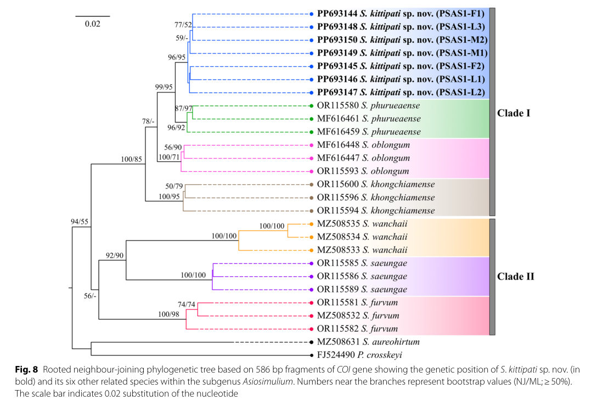

Species › Simulium › Asiosimulium
Simulium khongchiamense
| Classification | Genus Simulium, subgenus Asiosimulium |
|---|---|
| Status | valid |
| Distribution | Thailand (northeastern Thailand) (Srisuka et al. 2024) |
| Thailand | Northeastern Thailand (Aupalee et al. 2023, cited in Srisuka et al. 2024, pp. 2, 17, Fig. 1) |
| Diagnostic notes | Subgenus Asiosimulium (COI Clade I). Female: cercus elongated (1.9x basal width), abdominal segment 5 shiny dorsally, spermatheca globular, genital fork with deep incision between arms. Male: hind basitarsus 0.80x hind tibia, sensory vesicle <0.30x 3rd palp segment, abdominal segments 5-8 with shiny dorsolateral patches, upper-eye (large) facets in 17-18 vertical columns, median sclerite not upturned apically. Pupa: head tuberculate, thoracic integument sparsely covered with tubercles, gill with 31-33 filaments. Larva: postgenal cleft with pigmented sheath of subesophageal ganglion, gill histoblast 31-33 filaments, labral fan 37-39 main rays (vs 42-45 in S. phurueaense) (Srisuka et al. 2024, pp. 14-16). |
| Sources | Srisuka et al. 2024 |
⚠ Conflicting characters
| Character | Source A | Source B | Type | Comment |
|---|---|---|---|---|
| Spelling of genital fork in Asiosimulium female key | Srisuka et al. 2024: Female key couplets 5a, 5b, 7a, 7b (p. 15): printed as 'genital folk' | Srisuka et al. 2024: Description text (pp. 6, 14) uses 'genital fork' | printing error | Corrected to 'genital fork' in transcription with CORRECTION note on leads 5a |
How it keys out
The chain of characters leading to this taxon in each key (a ready-made diagnosis).
Subgenus Asiosimulium: adult females (Srisuka et al. 2024) – couplet 5b
Subgenus Asiosimulium: adult males (Srisuka et al. 2024) – couplet 4b
Subgenus Asiosimulium: pupae (Srisuka et al. 2024) – couplet 3a
Subgenus Asiosimulium: mature larvae (Srisuka et al. 2024) – couplet 5b
Figures


